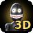

백룸 3D 종합 도우미
엔트리 작품 '백룸 3D' 전용 · 개발자 루나_15
완전한 3D
벽 뒤 괴물·가구가 비쳐 보이지 않고, 게임이 가벼워져요
마우스 고정
화면을 누르면 마우스가 가운데 고정, 움직이면 시점이 돌아가요
마우스 휠
: 설정 창이 열려 있으면 목록 스크롤, 게임 중엔 아이템 칸 이동.
ESC
: 고정이 풀리고 설정 창이 열려요.
게임 중
Alt
+
3
으로 3D를 켜고 끌 수 있어요.
예전 '엔트리 마우스 고정' 확장은 꺼 주세요.